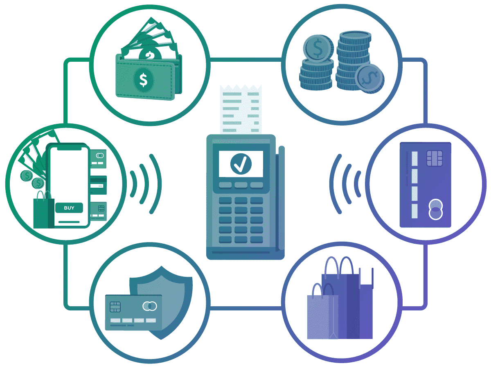

Project 01 · ERP Migration
Oracle Cloud Fusion Data Migration
Collaborated closely with stakeholders to gather detailed migration requirements, analysing the legacy data structure and ensuring compatibility with Oracle's data model. Documented migration requirements and conducted thorough data mapping, aligning legacy fields with Oracle Cloud Fusion to establish clear data connections and ensure consistency throughout.
Leveraged Extract, Transform, Load (ETL) tools to oversee the entire data extraction, transformation, and loading process, ensuring accuracy and integrity at every stage. Defined data validation and cleansing protocols to proactively address quality issues, maintaining a high standard of data integrity throughout the migration lifecycle.
Facilitated User Acceptance Testing (UAT) sessions to validate that migrated data met business requirements, tracking all issues through to resolution. Provided regular project updates to align milestones with stakeholder expectations and ensured all business needs were met before go-live.
Ensured the migration process adhered to strict security and governance standards, addressing compliance requirements to safeguard sensitive financial data. This was a critical workstream to guarantee integrity and regulatory alignment of all migrated information.
Conducted final validation to confirm data integrity and performed post-migration testing to ensure smooth system operations. Delivered training sessions for end users, equipping them to manage data effectively in Oracle Cloud Fusion, and created detailed documentation to support ongoing system management.
Seamless Oracle transition
Enhanced data governance
Improved system performance

Project 02 · Cloud
Cloud Infrastructure & Platform Strategy
Deep expertise across both Google Cloud Platform and Microsoft Azure, leveraging each platform's distinct capabilities to drive scalable and reliable cloud services for digital transformation initiatives — from data storage and analytics to AI and CI/CD automation.
Used both GCP and Azure to facilitate cloud migrations, data integration, and process automation — ensuring business needs were met with the right technical solutions. Guided stakeholders in selecting appropriate services and defined data architecture to align with requirements, ensuring cost-effective, scalable outcomes.
Google Cloud
GCP
- BigQuery — data warehousing
- Cloud Pub/Sub — messaging
- Cloud Functions — serverless
- Real-time analytics & ML
Microsoft Azure
Azure
- Azure SQL & Blob Storage
- Data Factory — ETL pipelines
- Azure DevOps — CI/CD
- Azure ML & Security Center
Scalable cloud adoption
Improved analytics
Regulatory compliance